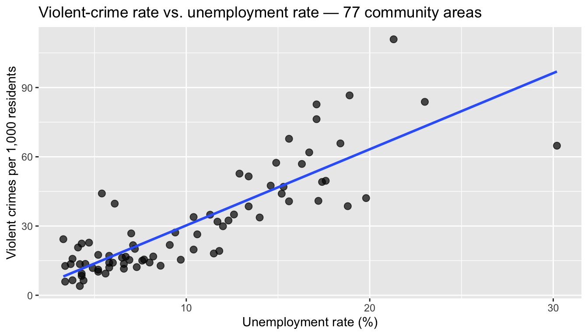
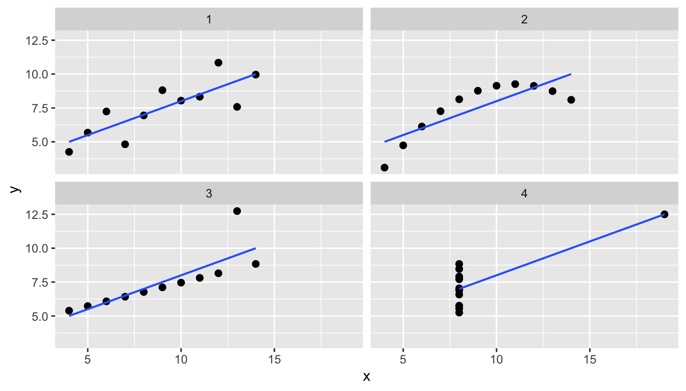

library(tidyverse)
library(correlation)
areas <- read_csv("https://smourtgos.github.io/crju705/data/chicago-areas.csv")Lab 10 · Correlation: Chicago Areas, Then a Null Worth Reporting
CRJU 705 · Session 10
Goal: run the complete correlation workflow from today’s lecture — scatterplots first, then cor() and the correlation matrix, then inference in both traditions with cor.test() and the correlation package — on the Chicago community areas, and then on two lab datasets you already know. One of them has real associations to find. The other has nothing, and learning to say “there’s nothing here” out loud is half of this lab’s point.
How labs work: run the Setup chunk as-is, follow the Walkthrough along with me, then complete the Your Turn tasks in your own script. The Exit Ticket gets submitted to Canvas before you leave.
Setup
Open RStudio, start a new R script, and run:
One new package this week: install.packages("correlation"). Good news after Session 8’s brms marathon — it’s a small install, and its Bayesian correlations sample instantly. No “Compiling Stan program…” pause this time.
areas is the anchor dataset’s second level (codebook): Chicago’s 77 community areas, each with 2025 crime rates and Census-based structural measures. One row = one community area — not one person. Keep that in mind all lab; it decides what your sentences are allowed to claim.
Walkthrough
Look first
Always. Before any correlation:
ggplot(areas, aes(unemployment_rate, violent_rate)) +
geom_point(size = 2.5, alpha = 0.7) +
geom_smooth(method = "lm", se = FALSE) +
labs(title = "Violent-crime rate vs. unemployment rate — 77 community areas",
x = "Unemployment rate (%)", y = "Violent crimes per 1,000 residents")
A strong, roughly linear, positive association — and no wild outlier manufacturing it. Now it’s safe to summarize with one number:
cor(areas$unemployment_rate, areas$violent_rate)[1] 0.8398579r = 0.84: very strong and positive, matching what the plot already told us.
The correlation matrix
Real analyses look at several candidate variables at once. cor() takes every numeric column you feed it:
violent_rate unemployment_rate median_income pct_bachelors
violent_rate 1.00 0.84 -0.71 -0.45
unemployment_rate 0.84 1.00 -0.81 -0.62
median_income -0.71 -0.81 1.00 0.76
pct_bachelors -0.45 -0.62 0.76 1.00Read it like a mileage chart: symmetric, 1s on the diagonal. Violence correlates strongly with unemployment (0.84), strongly and negatively with income (−0.71), moderately and negatively with college education (−0.45). But this table carries no uncertainty — no tests, no intervals.
The correlation() upgrade
The correlation package tests every pair and attaches confidence intervals — and it Holm-adjusts the p-values because six tests at once is exactly the pile-of-tests problem from Session 8:
areas |>
select(violent_rate, unemployment_rate, median_income, pct_bachelors) |>
correlation()# Correlation Matrix (pearson-method)
Parameter1 | Parameter2 | r | 95% CI | t(75) | p
-----------------------------------------------------------------------------------
violent_rate | unemployment_rate | 0.84 | [ 0.76, 0.90] | 13.40 | < .001***
violent_rate | median_income | -0.71 | [-0.80, -0.57] | -8.66 | < .001***
violent_rate | pct_bachelors | -0.45 | [-0.61, -0.25] | -4.33 | < .001***
unemployment_rate | median_income | -0.81 | [-0.88, -0.72] | -12.05 | < .001***
unemployment_rate | pct_bachelors | -0.62 | [-0.74, -0.46] | -6.90 | < .001***
median_income | pct_bachelors | 0.76 | [ 0.65, 0.84] | 10.24 | < .001***
p-value adjustment method: Holm (1979)
Observations: 77Same r values as the matrix, now each with a 95% CI and an adjusted p-value.
Frequentist inference on one pair
When one relationship is the star of your analysis, cor.test() gives the full readout:
cor.test(areas$unemployment_rate, areas$violent_rate)
Pearson's product-moment correlation
data: areas$unemployment_rate and areas$violent_rate
t = 13.4, df = 75, p-value < 2.2e-16
alternative hypothesis: true correlation is not equal to 0
95 percent confidence interval:
0.7585749 0.8954023
sample estimates:
cor
0.8398579 The reporting sentence, built from that output:
“Across Chicago’s 77 community areas, unemployment was strongly associated with the violent-crime rate, r = .84, t(75) = 13.4, p < .001, 95% CI [.76, .90].”
Note what the sentence does not say: nothing about unemployed people (ecological fallacy — these are areas), and nothing about unemployment causing violence.
The Bayesian version
Same package, one new argument:
set.seed(705) # the Bayesian version samples from the posterior — seed keeps output stable
areas |>
select(violent_rate, unemployment_rate) |>
correlation(bayesian = TRUE)# Correlation Matrix (pearson-method)
Parameter1 | Parameter2 | rho | 95% CI | pd | % in ROPE
----------------------------------------------------------------------------
violent_rate | unemployment_rate | 0.82 | [0.73, 0.87] | 100%*** | 0%
Parameter1 | Prior | BF
------------------------------------------
violent_rate | Beta (3 +- 3) | 6.64e+17***
Observations: 77Four things to read, all lecture echoes:
- rho ≈ 0.82 — the posterior median, pulled slightly toward 0 relative to the frequentist 0.84 by the mildly skeptical prior
- 95% CI — a credible interval: given data and prior, 95% probability the correlation lies in this range (the direct statement a confidence interval can’t make)
- pd = 100% — the posterior probability the correlation is positive
- BF ≈ 10¹⁷ — on Session 6’s scale, evidence beyond “extreme.” Hold this number in mind: in Your Turn 2 you’ll meet its opposite.
“r is blind” — Anscombe’s quartet, hands on
From lecture: four datasets that ship with R, statistically identical, visually nothing alike. The pivot gymnastics below just reshape anscombe’s eight columns into tidy (set, x, y) rows — copy it as given; the payoff is the summary and the plot:
anscombe_long <- anscombe |>
pivot_longer(everything(),
names_to = c(".value", "set"), names_pattern = "(.)(.)")
anscombe_long |>
summarize(mean_x = mean(x), mean_y = mean(y), r = cor(x, y), .by = set)# A tibble: 4 × 4
set mean_x mean_y r
<chr> <dbl> <dbl> <dbl>
1 1 9 7.50 0.816
2 2 9 7.50 0.816
3 3 9 7.5 0.816
4 4 9 7.50 0.817ggplot(anscombe_long, aes(x, y)) +
geom_point(size = 2) +
geom_smooth(method = "lm", se = FALSE, linewidth = 0.7) +
facet_wrap(~set)
Four times r = 0.82: one genuine linear trend, one curve, one outlier-hijacked line, one vertical stack with a single point doing all the work. r summarizes a shape it never checks. Plot first, every time.
Your Turn
Work in your own script. Comment each answer.
1. Neighborhoods — real associations. Back to the 500 simulated-but-realistic neighborhoods from Lab 3:
nbhd <- read_csv("https://smourtgos.github.io/crju705/data/neighborhoods.csv")
# a) Run correlation() on poverty_rate, unemployment_rate, and assaults.
# Which pair is strongest? Which is weakest?
# b) Scatterplot the strongest pair (put assaults on the y-axis if it's involved),
# with a fitted line. Does the shape look linear enough for r to be a fair summary?
# c) cor.test() on poverty_rate and assaults. Write the one-sentence report,
# lecture style: r, df, p, CI, direction, strength.
# d) These rows are neighborhoods, not residents. Reread your sentence from (c):
# does it accidentally make a claim about people? Fix it if so.2. Officers — an honest null. The 200 correctional officers from Lab 6, and a question the wellness literature cares about: does overtime track burnout?
officers <- read_csv("https://smourtgos.github.io/crju705/data/officers.csv")
# a) Run correlation() on overtime_hours_mo, burnout, sleep_hours, job_satisfaction.
# Describe what you see. (Expect to be underwhelmed. That's the data, not a bug.)
# b) Now the Bayesian version on just overtime_hours_mo and burnout:
# officers |>
# select(overtime_hours_mo, burnout) |>
# correlation(bayesian = TRUE)
# Look at the BF. It's BELOW 1 — remember Session 6: a BF < 1 is evidence FOR
# the null. Compute 1/BF: how many times more consistent are these data with
# "no correlation" than with a correlation?
# c) In a comment, report this result honestly in both traditions:
# one frequentist sentence (r, p — what are you allowed to conclude? recall
# Session 6: can a p-value ever SUPPORT the null?), and one Bayesian sentence
# (what the BF lets you say that the p-value doesn't).3. (Stretch) Rank correlation on an ordinal variable. disorder_level is ordered categories (Low → Very High) — Pearson’s r has no business there, but Spearman’s rank correlation is fine:
nbhd |>
mutate(disorder_rank = as.numeric(factor(disorder_level,
levels = c("Low", "Moderate", "High", "Very High")))) |>
with(cor.test(disorder_rank, assaults, method = "spearman"))
# In comments: what does rho say about disorder and assaults?
# And why was Spearman the right tool here when Pearson wasn't?Exit Ticket
Submit a short R script to Canvas before you leave, containing:
- A comment, 2–3 sentences: what Pearson’s r measures, its possible range, and one thing r = 0 does not mean
- The strongest and the weakest association you found across Your Turn 1 and 2, each with its r value and a plain-English direction/strength label
- Your two honest sentences about overtime and burnout from Your Turn 2c — the frequentist one and the Bayesian one
- A comment: what Anscombe’s quartet proves about correlation coefficients, and the habit it should build into every analysis you run from now on